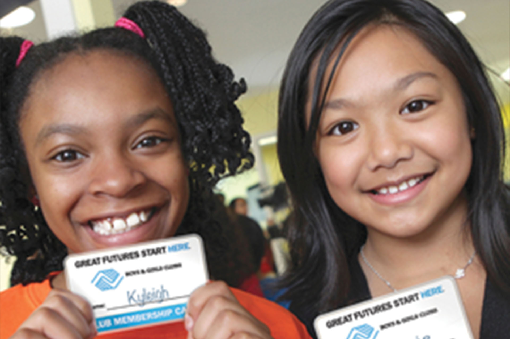
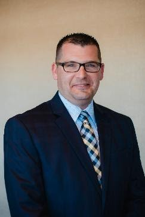
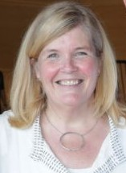
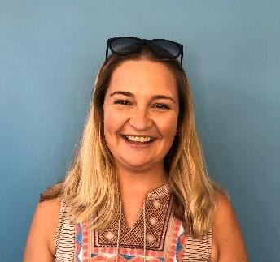

About Us

The Massachusetts Alliance of Boys & Girls Clubs is a group of 40 independent Boys & Girls Club corporations that operate throughout the state of Massachusetts. The Alliance was formed in 2000 for the purpose of seeking and sharing financial and program opportunities to help better serve the children of our state. Combined, our Clubs provide services to over 168,000 children in Massachusetts each year.
Jenn Aldworth is the Executive Director of the Massachusetts Alliance of Boys & Girls Clubs, having worked at three MA Clubs in Brockton, Ludlow, and Waltham. She would love to discuss the Alliance with you and can be reached at jaldworth@bgcb.org

The Massachusetts Alliance of Boys & Girls Clubs is truly grateful for the ongoing support of our many champions on Beacon Hill. Each session, the policies and funding measures for which you advocate have a critical impact on the more than 175,000 young people that we serve across the Commonwealth. On behalf of the Clubs and kids in your district, we ask for your continued support for the Alliance’s 2019-2020 legislative priorities:
Eileen Cavanaugh was appointed as President & CEO of the Boys & Girls Club of Greater Holyoke in September 2010. Eileen oversees 5 sites in the City of Holyoke serving over 350 youth daily. She is a MA state certified elementary teacher and has worked in the field of after-school and out-of-school-time for over 20 years having developed extensive experience in the development of programs aimed at children, teens, and families. Eileen is a recent graduate of the Boys & Girls Club of America Leadership Summit. A mastery level program designed and facilitated by Harvard Business School for Boys & Girls Club professionals. For the last 3 years, Eileen has been involved with the MA Alliance of Boys & Girls Club acting as Vice President, interim Treasurer most recently as President.
Derek currently serves as President/CEO of the Boys & Girls Club of Brockton and as CEO of the Boys & Girls Club of Taunton. Prior to working with the Boys & Girls Clubs, he worked with the YMCA, focusing on social responsibility, child protection, and youth initiatives. Derek is also an elected Selectman for the town of Swansea. Boys & Girls Clubs of America recognized Derek’s work with a 2018 Northeast Vision Spirit Award.
Andrea has served as CEO of West End House Boys & Girls Club for 20 years. She served with a variety of other Clubs prior to that and was selected as a BGCA Woodruff Fellow. She has an MPA from the University of South Alabama. She serves on the National Advisory Committee for the Arts for the Boys & Girls Clubs of America. Additionally, Andrea serves on the Board of Directors at the Music and Youth Initiative and on the Board of Advisors for the Eliot School of Fine and Applied Arts.
Julie currently serves as Executive Director of the James L. McKeown Boys & Girls Club of Woburn. She joined the Boys & Girls Club Movement in 2004 and served as the Arts & Education Director and then Director of Program Development of the Woburn organization before becoming the Executive Director in 2014. In 2018, she was named Executive of the Year for the Northeast Region by The Professional Association. Locally, she serves on her community’s Coalition Against Substance Abuse and is also a local volunteer for the American Cancer Society.
The five BGCA appointed positions are currently held by: